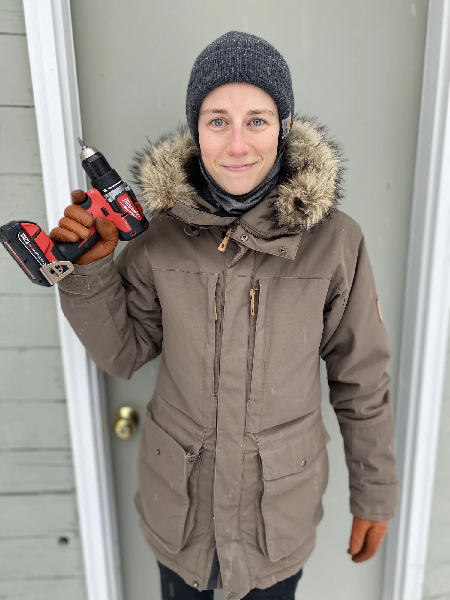

MILO TACHENY
I’m a designer, project manager, and researcher who loves working with people and the products that people use. I largely focus on how organizations execute well. My work centers on tracing how a decision moves through operations, technology, and the teams responsible for carrying it forward, and ensuring it remains sound at the point of implementation.
At the University of Minnesota College of Design, I support senior leadership on strategic initiatives, including alignment analysis mapping college priorities to university-wide plans and change management for institutional technology adoption. An expanding area of that work involves designing AI-assisted research and synthesis workflows that translate complex strategic documents into actionable decision support.
I am also the founder of Wiley Banting, a patent-pending diabetic gear brand distributed across 30+ states.
Prior to this role, I spent a decade in multi-site healthcare retail, financial services compliance, and specialty retail operations. I led in a $10M+ retail district, hiring and developing 80+ team members across store leadership and technical roles, and developed onboarding and training programs that scaled across locations.
